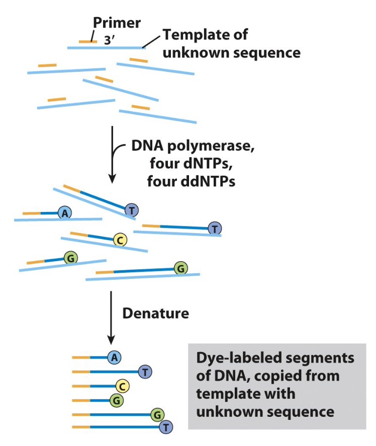
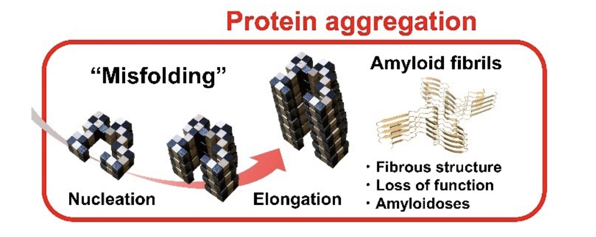
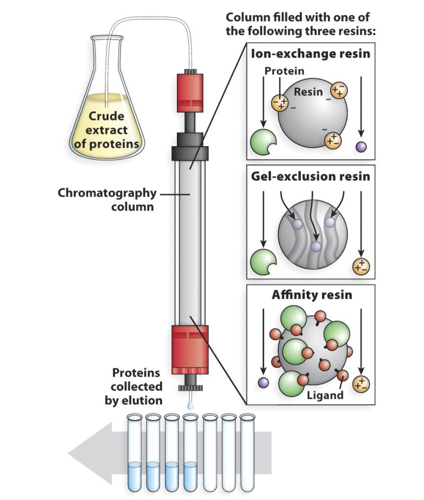

Automated Sanger Sequencing

Illumina Next-generation Sequencing
250 bases
Nanopore DNA Sequencing: the MinION
Read length can be kilobases
- DNA is passed through a nanopore channel
- Passage is regulated by an exonuclease or a polymerase coupled to the channel
- Read lengths can be kilobases
- Current fluctuations in the lipid bilayer identify the bases as they pass through the pore
What has next-generation sequencing techonoogh brought us?
- Sequencing of genomes from individual cancer cells.
- Sequencing from complex mixtures to determine what species are present
- Longitudinal studies to determine the molecular nature of human evolution
The ENCODE Project
Use RNA-Seq to quantify gene expression
ChIP-Seq tells us where the protein is interacting with DNA in our genome.
- Sequence all transcripts from the human genome
- Determine the binding sites for all proteins

Protein Fold
The RossMann Fold ?
A common, nucleotide-binding motif.
- Found in ATP & GTP binding proteins
- beta/alpha/beta motifs
- Active site is located near the loops at the junction formed by the beta sheets
P-loops and DEAD boxes are often found in the context of the Rossmann fold. These sequences are common in proteins that bind and hydrolyze ATP/GTP
The consensus sequence for P-loop structures is (G/A)XXGXGK(T/S).
Which of these statements below BEST explains why there are so many glycines in the loop?
- A. Glycine is a non-polar amino acid.
- B. The lack of a bulky R group in glycine allows for sharp turns.
- C. Glycine is an alpha helix breaker.
- D. Glycine cannot form ionic bonds with nucleotides
Proline is a greater alpha helix breaker than Glycine.
What do you predict is the function of the K residue?
K(Lysine) is positively charged. It will interact with phosphate groups in amino acid helping to stablize them.
The nucleotide is just in the perfect direction, so it will be hydrolized.
Walker Motifs
The Walker A and Walker B motifs are protein sequence motifs, known to have hiphly conserved three-dimensioanal structures.
A motif
The A motif is the main "P-loop" responsible for binding phosphate.
- The motif has the pattern G-x(4)-GK-[TS], where G, K, T and S denote glycine, lysine, threonine and serine residues respectively, and x denotes any amino acid.
- It is presented in many ATP and GTP utilizing area.
B motif
The B motif is a much less conserved downstream region.
How do proteins fold?
- Properly folded proteins have low free energy and lw entropy
- Number of possible folds is mind-boggling
- But options quickly decrease as secondary structures form and hydrophoic pockets form
Consequences of misfolded proteins

- Alzheimer’s disease (beta-amyloid fibrils)
- Parkinson’s disease (alpha synuclein clumps)
- Huntington’s disease (polyglutamine aggregates)
Misfolded PrP proteins aggregate, form fibers that lead to plaques and cell death
Protein Seperation, Purification and Detection
Seperate / Purify Proteins
- Columns
- Gels
To detect/identify proteins:
- western blot (identify and quantify single protein)
- mass spectrometry (identify and quantify multiple proteins)
- immunofluorescence (location in fixed tissues)
- fluorescent tags (location in living tissues)
Column Chromatography Separates Proteins According to Physical Characteristics

Seperates by
- Charge
- Size/Shape
- Binding Affinity(protein-protein interaction)
Or in sequence.
Epitope Tags Allow for Easy Affinity Purification
Bind Protein with GST tag. The tags wil be bound with
Other tags:
- polyHis
- FLAG
- Myc
- HA
SDS-PAGE(polyacrylamide gel electrophoresis) Seperates Proteins Based on Size
Identifying and Quantifying Specific Proteins by Western Blotting(Immunoblotting)
Primary antibody recognize protein of interest; Secondary antibody binds to primary antibody and is 'labeled'(can be visualized directly.)
The reason we do antibody twice is which is cheaper and more efficient.
Comparing Nucleic Acid and Protein Identification Methods.
- Electrophoresis
- Agarose gel
- SDS-PAGE
- Transfer
- Nylon membrane
- PVDF membrane
- Blocking
- Blocked with BSA
- Blocked with BSA
- Probing
- DNA or RNA probe
- Prmary antibody
- Detection
- Blotting Results
Protein separation and identification by LC-MS (liquid chromatography and mass spectrometry)
- Peptide mixture is initially sperated by liquid chromatography.
- Peptides exit the LC column at different times and enter into the mass spectrometer
- Peptides are identified by their mass:charge ratio
- Can identify hundreds of proteins at one time
Determine Location of Specific Proteins in Fixed Cells and Tissues: Immunofluorescence